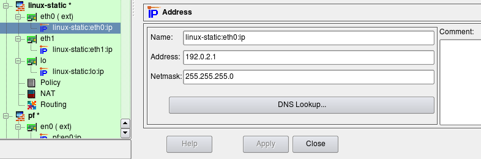
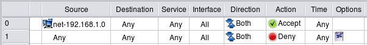
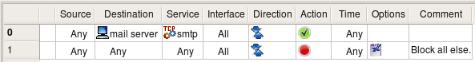
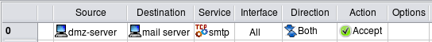
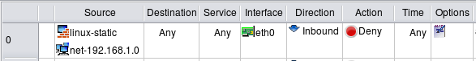
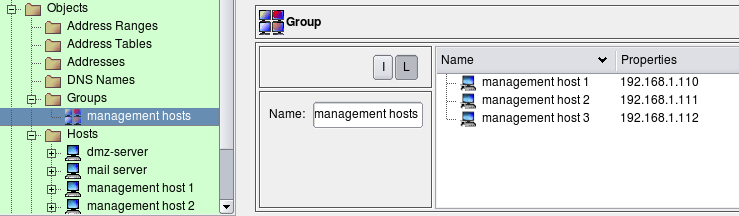
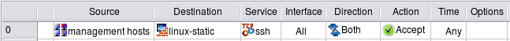
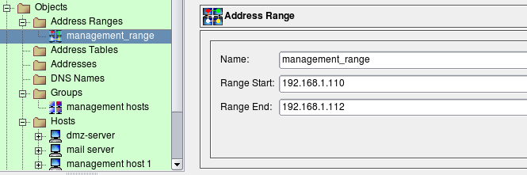
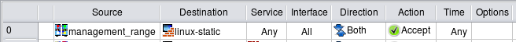

http://www.fwbuilder.org
| Author: vadim@fwbuilder.org http://www.fwbuilder.org |
This article continues the series of articles on Firewall Builder, a graphical firewall configuration and management tool that supports many Open Source firewall platforms as well as Cisco IOS access lists and Cisco ASA (PIX). Firewall Builder was introduced on this site earlier with articles Getting Started With Firewall Builder, Using Firewall Object In Firewall Builder. Firewall Access Policy Rulesets, Part 1.
This article demonstrates several examples of Access Policy rules and generated configurations for iptables, PF and Cisco PIX.
More information on Firewall Builder, pre-built binary packages and source code, documentation can be found on the project web site at http://www.fwbuilder.org/. Numerous examples of iptables, pf and other rules are available in Firewall Builder Users Guide. Follow Firewall Builder Project Blog for announcements and articles on all aspects of using Firewall Builder.
We start with the firewall object that looks like shown in the next screenshot. This firewall has three interfaces: eth0 (outside), eth1 (inside) and loopback. All addresses are assigned statically. Address of the inside interface "eth1" is 192.168.1.1/24, we also have network object with name "net-192.168.1.0" that defines internal network 192.168.1.0/24.
To illustrate generated configurations for platforms other than iptables/Linux in this article, I am using similarly configured firewall objects with different platform and host OS settings.
In this example we create a rule to permit our internal LAN to connect to the Internet using any protocol. Network object "net-192.168.1.0" should be configured with the IP address and netmask corresponding to those used on the internal network behind the firewall. Since internal LAN in this example uses private address block, the rules described here are insufficient and should be accompanied with corresponding NAT (Network Address Translation) rules. We discuss NAT rules in the next article.
Here are the iptables command generated for this example:
$IPTABLES -A INPUT -m state --state ESTABLISHED,RELATED -j ACCEPT
$IPTABLES -A OUTPUT -m state --state ESTABLISHED,RELATED -j ACCEPT
$IPTABLES -A FORWARD -m state --state ESTABLISHED,RELATED -j ACCEPT
# Rule 0 (global)
#
$IPTABLES -A INPUT -s 192.168.1.0/24 -m state --state NEW -j ACCEPT
$IPTABLES -A OUTPUT -s 192.168.1.0/24 -m state --state NEW -j ACCEPT
$IPTABLES -A FORWARD -s 192.168.1.0/24 -m state --state NEW -j ACCEPT
#
# Rule 1 (global)
#
$IPTABLES -N RULE_1
$IPTABLES -A OUTPUT -j RULE_1
$IPTABLES -A INPUT -j RULE_1
$IPTABLES -A FORWARD -j RULE_1
$IPTABLES -A RULE_1 -j LOG --log-level info --log-prefix "RULE 1 -- DENY "
$IPTABLES -A RULE_1 -j DROP
Rules that utilize module
The first rule was placed in all three
chains:
Rule #1 catches all other packets going to, from and across the firewall and logs and drops them.
Lets see what gets generated for iptables if option "Assume firewall is part of any" is turned off:
$IPTABLES -A INPUT -m state --state ESTABLISHED,RELATED -j ACCEPT $IPTABLES -A OUTPUT -m state --state ESTABLISHED,RELATED -j ACCEPT $IPTABLES -A FORWARD -m state --state ESTABLISHED,RELATED -j ACCEPT # Rule 0 (global) # $IPTABLES -A FORWARD -s 192.168.1.0/24 -m state --state NEW -j ACCEPT # # Rule 1 (global) # $IPTABLES -N RULE_1 $IPTABLES -A FORWARD -j RULE_1 $IPTABLES -A RULE_1 -j LOG --log-level info --log-prefix "RULE 1 -- DENY " $IPTABLES -A RULE_1 -j DROP
Automatically added rules that match packets in states ESTABLISHED,RELATED are not affected by the "Assume firewall is part of any" option and always match in chains INPUT, OUTPUT and FORWARD.
Since the compiler does not assume firewall matches "any" anymore, the rule with "any" is destination yields iptables command only in the FORWARD chain. This applies both to the rule that permits outgoing connections from internal LAN and to the "Catch all" rule #1. The choice of the setting for this option is up to the policy designer. Some people find it more intuitive to leave it off and add rules to control access to and from the firewall explicitly. Note that default policy for all chains is set to DROP with the following commands at the very top of the generated iptables script:
$IPTABLES -P OUTPUT DROP $IPTABLES -P INPUT DROP $IPTABLES -P FORWARD DROP
This means that if you do not add rules to permit access to the firewall and turn option "Assume firewall is part of any" off, then all generated iptables rules will be in the FORWARD chain and all access to the firewall itself will be blocked by the default policy in the INPUT chain. On the other hand, if the option "Assume firewall is part of any" is on, then the rule permitting access from internal network to "any" gets side effect of permitting access to the firewall as well. It is up to you to decide whether this is a good or bad thing. You can always restrict access to the firewall and control it with a few rules somewhere close to the beginning of the policy regardless of the setting of this option.
Even if you choose to turn option "Assume firewall is part of any" off and do not add any rules to permit access to the firewall in your policy rule set, you can use another option in the firewall object "advanced" settings dialog for this. The option is called "Always permit ssh access to the firewall from management station" and allows you to enter single ip address or subnet and then automatically adds a rule to the generated script to permit ssh access to the firewall from this address. We demonstrate this feature in one of the following articles.
Examples below have been compiled with the option "Assume firewall is part of any" turned on.
Here is the PF configuration created for the same rules:
# Rule 0 (global) # pass quick inet from 192.168.1.0/24 to any keep state # # Rule 1 (global) # block log quick inet from any to any
Firewall Builder always generates PF configuration using
its
Here is the fragment of the PIX config generated for the same combination of rules:
! Rule 0 (global) ! access-list inside_acl_in remark 0 (global) access-list inside_acl_in permit ip 192.168.1.0 255.255.255.0 any ! ! Rule 1 (global) ! access-list outside_acl_in remark 1 (global) access-list outside_acl_in deny ip any any log 4 interval 300 access-list dmz50_acl_in remark 1 (global) access-list dmz50_acl_in deny ip any any log 4 interval 300 access-list inside_acl_in remark 1 (global) access-list inside_acl_in deny ip any any log 4 interval 300 access-group dmz50_acl_in in interface dmz50 access-group inside_acl_in in interface inside access-group outside_acl_in in interface outside
Since source address in the rule #0 is limited to the internal
network, policy compiler was able to determine which interface
the access list command should be associated with and added it
only to the ACL
The
This is one of the simplest, most basic tasks you may want your firewall to do - block all the traffic while letting certain protocols through. Let's assume that we have a network consisting of just the firewall "firewall1" and a few hosts behind it. We want to let SMTP through to the mail server from the Internet, and block everything else. All we need to do is put the following rules in the Global Policy:
Rule #0 allows SMTP through to the server, while rule #1 blocks and logs everything else. It is worth mentioning that this policy also blocks all the access to firewall itself, including access to it from internal hosts.
We do not need any additional rules to take care of "reply" packets coming back from the server to clients because our underlying firewall software supports stateful inspection and "understands" that such packets should be let through.
Here is iptables script generated for these two simple rules:
$IPTABLES -A INPUT -m state --state ESTABLISHED,RELATED -j ACCEPT
$IPTABLES -A OUTPUT -m state --state ESTABLISHED,RELATED -j ACCEPT
$IPTABLES -A FORWARD -m state --state ESTABLISHED,RELATED -j ACCEPT
# Rule 0 (global)
#
$IPTABLES -A OUTPUT -p tcp -m tcp -d 192.168.1.100 \
--dport 25 -m state --state NEW -j ACCEPT
$IPTABLES -A FORWARD -p tcp -m tcp -d 192.168.1.100 \
--dport 25 -m state --state NEW -j ACCEPT
#
# Rule 1 (global)
#
$IPTABLES -N RULE_1
$IPTABLES -A OUTPUT -m state --state NEW -j RULE_1
$IPTABLES -A INPUT -m state --state NEW -j RULE_1
$IPTABLES -A FORWARD -m state --state NEW -j RULE_1
$IPTABLES -A RULE_1 -j LOG --log-level info --log-prefix "RULE 1 -- DENY "
$IPTABLES -A RULE_1 -j DROP
Generated iptables rules were placed in
both
Here is the code generated for PF for the same rule:
# Rule 0 (global) # pass quick inet proto tcp from any to 192.168.1.100 port 25 keep state # # Rule 1 (global) # block log quick inet from any to any
In PF we do not have to worry about chains and there is no option "Assume firewall is part of any" because there is no difference.
Here is the code generated for PIX for the same rule:
! Rule 0 (global) ! access-list outside_acl_in remark 0 (global) access-list outside_acl_in permit tcp any host 192.168.1.100 eq 25 access-list dmz50_acl_in remark 0 (global) access-list dmz50_acl_in permit tcp any host 192.168.1.100 eq 25 access-list inside_acl_in remark 0 (global) access-list inside_acl_in permit tcp any host 192.168.1.100 eq 25 ! ! Rule 1 (global) ! access-list outside_acl_in remark 1 (global) access-list outside_acl_in deny ip any any log 0 interval 300 access-list dmz50_acl_in remark 1 (global) access-list dmz50_acl_in deny ip any any log 0 interval 300 access-list inside_acl_in remark 1 (global) access-list inside_acl_in deny ip any any log 0 interval 300
In PIX, all access lists must be attached to interfaces of the
firewall. Since the rule did not specify source address, the
program has to generate access lists that would match any
source, which means they should be attached to all interfaces
of the firewall. Since my PIX test object has three
interfaces:
In this example, we look at the rule that is similar to the previous one, but also matches source address. This rule permits access to the mail server inside from mail relay on DMZ and from no other source. Generated rules for iptables and pf are very similar, they just add source address matching. Generated rules for PIX are different because now the program can intelligently pick the right access list and avoid generating redundant rules.
Here is the code generated for iptables from this rule:
# Rule 0 (global)
#
$IPTABLES -A FORWARD -p tcp -m tcp -s 192.168.2.22 -d 192.168.1.100 \
--dport 25 -m state --state NEW -j ACCEPT
Since source rule element was limited to the host on DMZ, generated iptables rule is placed only in the FORWARD chain and also matches the source using "-s" clause.
Lets look at the configuration generated for PIX from the same rule:
! Rule 0 (global) ! access-list dmz50_acl_in remark 0 (global) access-list dmz50_acl_in permit tcp host 192.168.2.22 host 192.168.1.100 eq 25 access-group dmz50_acl_in in interface dmz50 access-group inside_acl_in in interface inside access-group outside_acl_in in interface outside
the rule was placed only in the access list attached to the DMZ interface because packets with source address of the host on DMZ can only cross this interface of the firewall, assuming spoofed packets are blocked by special rule, which will discuss below.
Generally speaking, IP spoofing is a technique of generating IP packets with source address that belongs to someone else. Spoofing creates a danger when hosts on the LAN permit access to their resources and services to trusted hosts by checking the source IP of the packets. Using spoofing, an intruder can fake the source address of his packets and make them look like they originated on the trusted hosts. The basic idea of anti-spoofing protection is to create a firewall rule assigned to the external interface of the firewall that examines source address of all packets crossing that interface coming from outside. If the address belongs to the internal network or the firewall itself, the packet is dropped.
Simple anti-spoofing rule looks like shown on
the next screenshot. Unlike the rule in the
previous example, anti-spoofing rule requires matching of the
interface and direction. The idea is that packets that come
from outside must not have source addresses that match
internal network or the firewall itself. The only way to
distinguish packets coming from outside from those coming from
inside is to check which interface of the firewall they cross
and in which direction. Here the rule matches
interface
Article Using Firewall Object In Firewall Builder explains how a firewall object and its interfaces can be created. Article Firewall Access Policy Rulesets, Part 1 explains the concept of direction.
Here are the iptables commands generated for this rule:
# Rule 0 (eth0) # # anti spoofing rule # $IPTABLES -N In_RULE_0 $IPTABLES -A INPUT -i eth0 -s 192.0.2.1 -j In_RULE_0 $IPTABLES -A INPUT -i eth0 -s 192.168.1.1 -j In_RULE_0 $IPTABLES -A INPUT -i eth0 -s 192.168.1.0/24 -j In_RULE_0 $IPTABLES -A FORWARD -i eth0 -s 192.0.2.1 -j In_RULE_0 $IPTABLES -A FORWARD -i eth0 -s 192.168.1.1 -j In_RULE_0 $IPTABLES -A FORWARD -i eth0 -s 192.168.1.0/24 -j In_RULE_0 $IPTABLES -A In_RULE_0 -j LOG --log-level info --log-prefix "RULE 0 -- DENY " $IPTABLES -A In_RULE_0 -j DROP
Iptables commands were placed in INPUT and FORWARD chains to match both packets that are headed for the firewall and through the firewall to hosts behind it. Rules match source address of the packets and then log and drop them. Fwbuilder generated iptables commands to match all addresses of the firewall (192.168.1.1, 192.0.2.1) and network behind it (192.168.1.0/24).
Lets see what gets generated for the same rule for PF:
# Tables: (1)
table <tbl.r0.s> { 192.0.2.1 , 192.168.1.1 }
# Rule 0 (en0)
# anti spoofing rule
#
block in log quick on en0 inet from <tbl.r0.s> to any
block in log quick on en0 inet from 192.168.1.0/24 to any
#
Here compiler uses tables to make generated PF code more
compact. Table
Here is the same rule, compiled for PIX:
! Rule 0 (Ethernet1/0) ! anti-spoofing rule ! access-list outside_acl_in remark 0 (Ethernet1/0) access-list outside_acl_in remark anti-spoofing rule access-list outside_acl_in deny ip host 192.0.2.1 any access-list outside_acl_in deny ip host 192.168.2.1 any access-list outside_acl_in deny ip host 192.168.1.1 any access-list outside_acl_in deny ip 192.168.1.0 255.255.255.0 any access-group outside_acl_in in interface outside
Anti-spoofing rule must match all addresses of the firewall to leave no holes. However it is difficult to do if one interface of the firewall gets its ip address dynamically via DHCP or PPP protocol. This address is unknown at the compile time and proper configuration can not be generated by just including it. Some firewall platforms have syntax in their configuration language that provides a way to match an address of an interface at run time, but other platforms do not have anything like this. Lets see how fwbuilder works around this problem.
In this test I use variation of the same firewall object where
external interface
Generated iptables script looks like this:
getaddr eth0 i_eth0 # Rule 0 (eth0) # # anti spoofing rule # $IPTABLES -N In_RULE_0 test -n "$i_eth0" && $IPTABLES -A INPUT -i eth0 -s $i_eth0 -j In_RULE_0 $IPTABLES -A INPUT -i eth0 -s 192.168.1.1 -j In_RULE_0 $IPTABLES -A INPUT -i eth0 -s 192.168.1.0/24 -j In_RULE_0 test -n "$i_eth0" && $IPTABLES -A FORWARD -i eth0 -s $i_eth0 -j In_RULE_0 $IPTABLES -A FORWARD -i eth0 -s 192.168.1.1 -j In_RULE_0 $IPTABLES -A FORWARD -i eth0 -s 192.168.1.0/24 -j In_RULE_0 $IPTABLES -A In_RULE_0 -j LOG --log-level info --log-prefix "RULE 0 -- DENY " $IPTABLES -A In_RULE_0 -j DROP
The script defines shell
function
Here is what is generated for PF:
table <tbl.r0.d> { en0 , 192.168.1.1 }
# Rule 0 (en0)
# anti spoofing rule
#
block in log quick on en0 inet from <tbl.r0.d> to any
block in log quick on en0 inet from 192.168.1.0/24 to any
In PF, one can place interface name ("en0") in the table and PF will use its address at the execution time.
Unfortunately there is no workaround for this problem for PIX.
Sometimes we need to define a lot of very similar rules for
multiple hosts or networks. For example, there may be a need
to permit the same service to 10 different hosts on the
network, while still blocking it to all others. The simplest
way to accomplish this is to add 10 rules with the same source
and service fields and just different destinations. Another
method is to add 10 objects to the Source or Destination rule
element of the same rule. Both methods can make firewall
policy quite cluttered and hardly readable. To avoid this we
can use groups. Group is just a container which includes
references to multiple objects of the same or similar type.
Firewall Builder supports groups of objects and groups of
services. You can
put
Groups not only make policy rules more readable, another great advantage of object groups is that they are reusable. You can now have many different rules using this same group object. If you ever need to add another host or address to the group, you only need to do it once and all rules will automatically pick the change after recompile.
To add objects to a group simply drag them from the tree on the left into group view on the right, or use Copy/Paste functions available via menus.
Once appropriate group has been created, it can be used for the policy and NAT rules just like any other object.
Here is iptables commands generated for this example:
# Rule 0 (global) # $IPTABLES -N Cid17843X27745.0 $IPTABLES -A INPUT -p tcp -m tcp --dport 22 -m state --state NEW -j Cid17843X27745.0 $IPTABLES -A Cid17843X27745.0 -s 192.168.1.110 -j ACCEPT $IPTABLES -A Cid17843X27745.0 -s 192.168.1.111 -j ACCEPT $IPTABLES -A Cid17843X27745.0 -s 192.168.1.112 -j ACCEPT
Generated iptables command is placed only in
the
Compiler decides whether to use temporary chain not because administrator used object group in source in the original rule in the GUI, but because it determined that in the end it needs to compare source address of the packet against several addresses defined in the policy. If the group contained just one address, the generated iptables script would have consisted of just one iptables command without temporary chain. If there was no group in "Source" of the rule but instead all these host objects were placed in "source" of the rule directly, generated iptables script would look exactly like shown above, using temporary chain for optimization.
Here is the code generated for PF for the same rule:
table <tbl.r0.d> { 192.0.2.1 , 192.168.1.1 }
table <tbl.r0.s> { 192.168.1.110 , 192.168.1.111 , 192.168.1.112 }
# Rule 0 (global)
#
pass quick inet proto tcp from <tbl.r0.s> to <tbl.r0.d> port 22 keep state
Policy compiler for PF extensively uses tables to produce compact code. PF tables are reused when needed.
Here is the config generated for PIX:
object-group network inside.id20599X27745.src.net.0
network-object host 192.168.1.110
network-object host 192.168.1.111
network-object host 192.168.1.112
exit
! Rule 0 (global)
!
access-list inside_acl_in remark 0 (global)
access-list inside_acl_in permit tcp object-group inside.id20599X27745.src.net.0
host 192.0.2.1 eq 22
access-list inside_acl_in permit tcp object-group inside.id20599X27745.src.net.0
host 192.168.1.1 eq 22
!
Just like in case of iptables, it is not that a group object
was used in the original rule what triggered using
In the example above, three hosts used for the
group
Since addresses of the management hosts are consecutive, we can use Address Range object to describe them:
We use this object in the rule just like any other object. Here is how the rule looks like:
The main difference in generated code for the rule using Address Range compared to the rule using collection of individual addresses is that compiler is allowed to optimize it. It tries to squeeze the address range to the minimal set of address and network objects. Here is how it looks like for iptables:
# Rule 0 (global) # $IPTABLES -A INPUT -s 192.168.1.110/31 -m state --state NEW -j ACCEPT $IPTABLES -A INPUT -s 192.168.1.112 -m state --state NEW -j ACCEPT
Again, the difference may not be very great when we have only three ip addresses, but in case of a range that span hundred addresses the performance gain and reduction in the size of generated script are significant.
Generated PF and PIX configurations look similar.
We will contniune with even more complex examples of policy access rules in the next article.
References: